BibleNote 사용 설명서
성경을 읽고, 설교노트를 그 구절에 매달아 두는 앱
차례
1. 폰에 설치하기
주소 wavesimm.github.io/biblenote 를 열고 홈 화면에 추가하면, 앱처럼 아이콘으로 열리고 전체 화면으로 보입니다.
- 안드로이드 (크롬) — 오른쪽 위 ⋮ → 홈 화면에 추가 또는 앱 설치
- 아이폰 (사파리) — 아래 가운데 공유 단추 □↑ → 홈 화면에 추가
- PC — 크롬·엣지 주소창 오른쪽의 설치 아이콘을 누르거나, 그냥 브라우저에서 써도 됩니다.
새 버전이 나오면 앱을 한 번 닫았다 다시 열 때 바뀝니다. 설정 Aa 오른쪽 위에 버전이 보입니다.
2. 읽기 화면의 단추
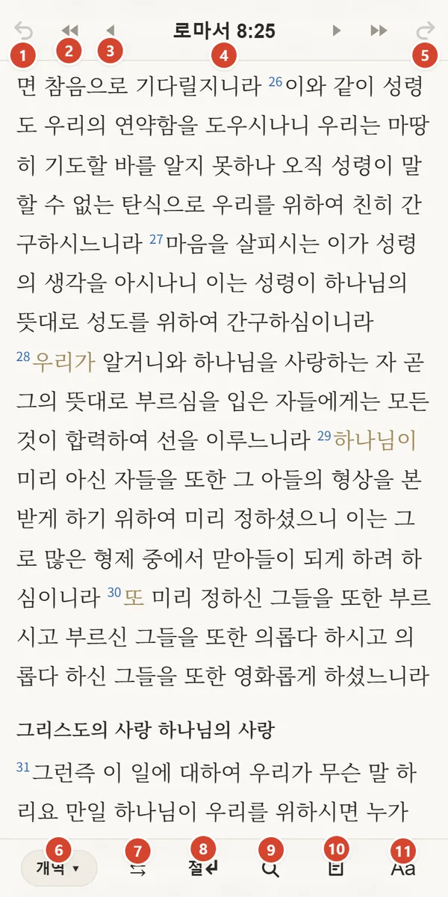
위쪽 막대 — 이동
- 1이전 위치 — 방금 전에 보던 곳으로 돌아갑니다.
- 2이전 장 (겹 삼각형) · 오른쪽 짝은 다음 장
- 3이전 절 (삼각형) · 오른쪽 짝은 다음 절
- 4지금 위치 — 누르면 이동 화면이 열립니다 (3장).
- 5다음 위치 — 1로 돌아갔다가 다시 앞으로.
아래쪽 막대 — 보기와 노트
- 6번역본 — 누르면 번역본을 고릅니다.
- 7⇆ 비교 — 번역본 둘을 함께 봅니다.
- 8절↵ — 절마다 줄을 바꿔 보여 줍니다. 다시 누르면 문단처럼 이어서.
- 9찾기 — 성경 본문·노트 검색.
- 10노트 — 지금 보는 절을 본문으로 새 노트를 엽니다.
- 11Aa 설정 — 글자 크기, 글꼴, 노트 동기화 등.
성경은 절마다 줄을 바꾸지 않고 문단처럼 이어서 보여 줍니다. 장·절은 찾아가는 좌표로만 쓰고, 읽을 때는 방해하지 않게 하려는 것입니다. 작은 파란 숫자가 절 번호, 왼쪽 여백의 숫자가 장 번호입니다.
- 화면을 왼쪽으로 쓸면 노트 쪽으로 갑니다 — 쓰던 노트가 있으면 그 노트로, 없으면 노트 목록으로.
- 성경을 펴 둔 동안에는 화면이 저절로 꺼지지 않습니다.
- 뒤로가기를 누르면 "한 번 더 누르면 앱이 닫힙니다" 알림이 먼저 뜹니다.
3. 원하는 곳으로 이동
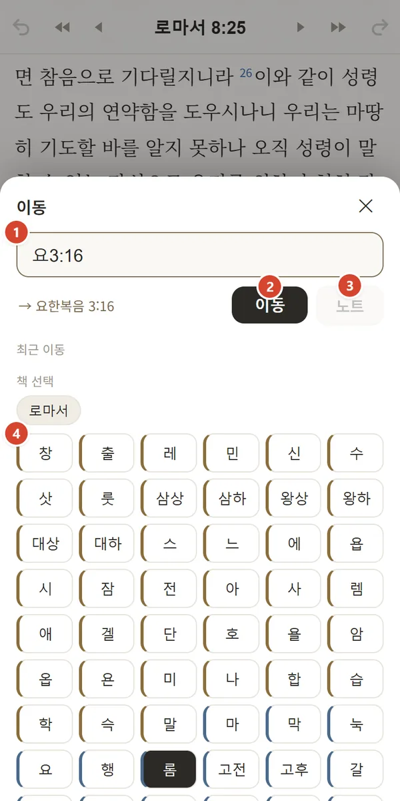
위쪽 막대의 지금 위치(예: 로마서 8:25)를 누르면 열립니다.
- 1구절 입력 —
요3:16,창세기 1:1,롬 8처럼 적으면 아래에 어디인지 보여 줍니다. - 2이동 — 그 절로 갑니다.
- 3노트 — 그 구절을 본문으로 바로 새 노트를 엽니다. 예배 시작 때 설교 본문을 부르면 이 길이 가장 빠릅니다.
- 4책 선택 — 책을 누르고 장을 누르면 이동합니다. 위에는 최근 이동한 곳과 최근 책이 나옵니다.
4. 번역본 바꾸기·비교
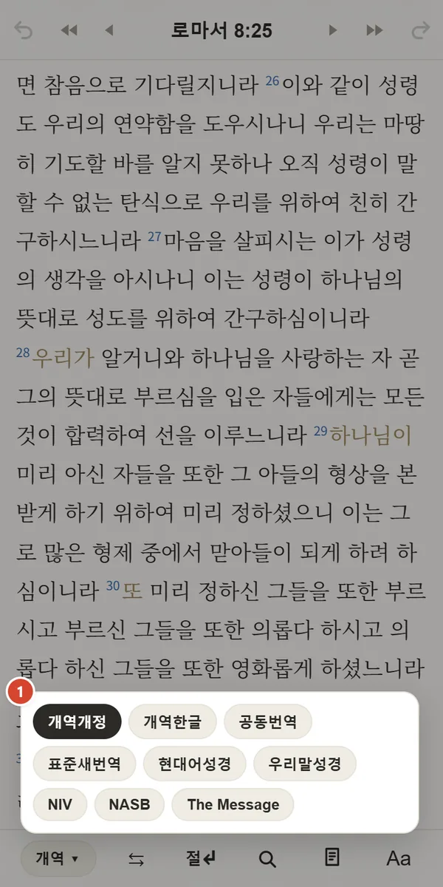
아래 막대 왼쪽의 번역본 단추를 누르면 고를 수 있습니다.
- 1개역개정 · 개역한글 · 공동번역 · 표준새번역 · 현대어성경 · 우리말성경 · NIV · NASB · The Message
읽던 절은 그대로 두고 번역본만 바뀝니다.
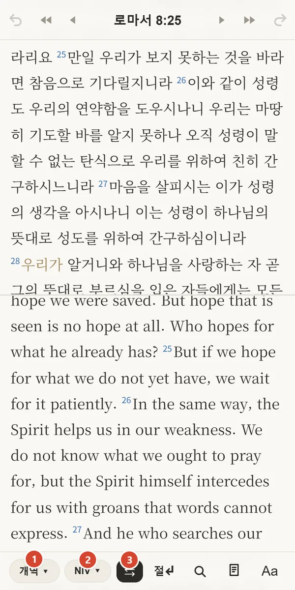
- 1위 창의 번역본
- 2아래 창의 번역본 — 각각 따로 바꿀 수 있습니다.
- 3⇆ — 비교를 켜고 끕니다.
두 창은 같은 절을 따라 함께 움직입니다. 폰을 가로로 돌리면 좌우로 나란히 보입니다.
5. 예배 중 노트 쓰기
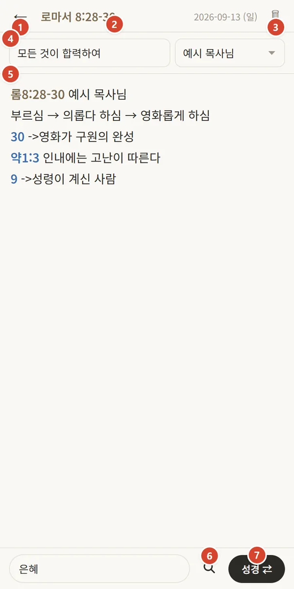
- 1← 닫기 — 쓴 내용은 따로 저장하지 않아도 저절로 저장됩니다.
- 2설교 본문 — 노트 첫 구절이 여기 뜹니다. 누르면 성경의 그 자리로.
- 3삭제
- 4제목·설교자 — 없어도 됩니다. 설교자 칸의 ▼를 누르면 전에 쓴 이름이 자주 쓴 순으로 나옵니다.
- 5본문 — 알아본 구절은 글자 색이 바뀝니다. 색이 붙은 구절을 누르면 성경으로 갑니다.
- 6노트 찾기 — 쓰다가 지난 노트를 찾아볼 때.
- 7성경 ⇄ — 성경 화면으로 잠깐 갔다가, 떠 있는 노트 ⇄ 단추로 쓰던 자리에 돌아옵니다. 오른쪽으로 쓸어도 성경으로 갑니다.
구절 적는 법 — 본문만 정해 두면 나머지는 짧게
첫 줄에 설교 본문을 적습니다. 그 뒤로는 책 이름을 빼고 적어도 설교 본문을 기준으로 채워집니다.
롬8:28-30 예시 목사님 ← 설교 본문 = 이 노트의 기준 30 ->영화가 구원의 완성 ← 절만 적으면 → 로마서 8:30 13:1 권세에 복종하라 ← 장:절 → 로마서 13:1 약1:3 인내에는 고난이 따른다 ← 다른 책은 약어로 → 야고보서 1:3 9 ->성령이 계신 사람 ← 다시 절만 → 로마서 8:9 (야고보서가 아니라 본문으로)
4절,3-4절,13-14 :처럼 적어도 알아봅니다.1.2)처럼 번호 매긴 목록은 구절로 치지 않습니다.- 본문을 놓쳤으면 비워 두고 쓰다가 나중에 첫 줄에 적으세요. 그때 앞서 적은 절 번호들에 한꺼번에 색이 붙습니다.
- 아래 칸에 태그를 쉼표로 적으면 나중에 찾기 쉽습니다.
새 노트를 여는 길은 셋입니다 — 아래 막대의 노트 단추(지금 보는 절이 본문), 이동 화면의 노트 단추(입력한 구절이 본문), 성경 화면에서 왼쪽으로 쓸기(쓰던 노트로 이어서).
6. 성경에서 노트 다시 만나기
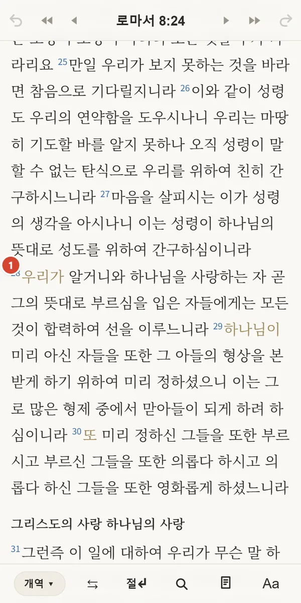
노트에 적은 구절은 성경에서 첫 단어의 색이 바뀝니다.
- 1로마서 8:28 — 이 절이 적힌 노트가 있다는 표시입니다. 이 문장을 누르면 노트가 뜹니다.
찾으러 가지 않아도, 읽다 보면 예전 노트가 저절로 나타나는 것이 이 앱의 핵심입니다.
- 1그 절이 적힌 노트들이 최근 것부터 나옵니다. 같은 구절로 몇 년에 걸쳐 들은 설교를 한눈에 비교할 수 있습니다.
노트 열기를 누르면 노트 전체가 열립니다. 아래로 내리면 이 절의 관주도 있습니다.
7. 찾기
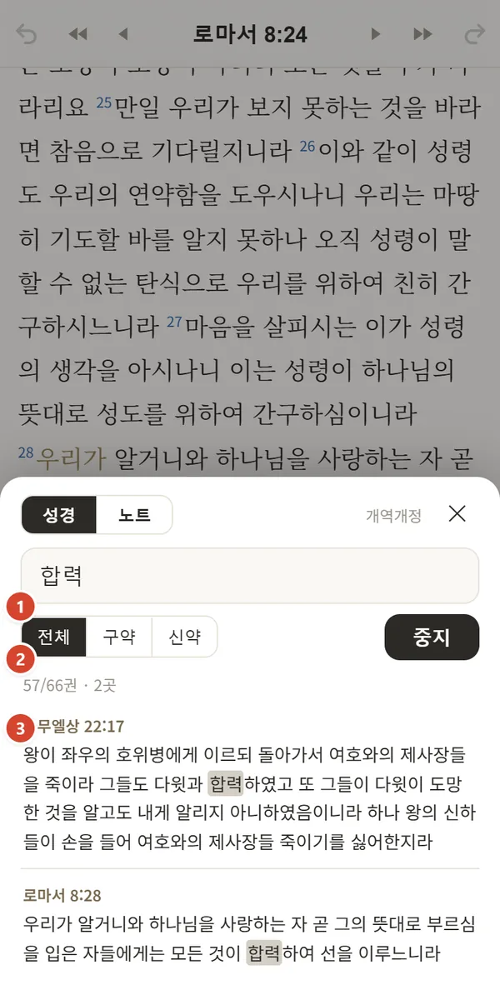
아래 막대의 돋보기를 누릅니다.
- 1성경 / 노트 중 무엇을 찾을지 고릅니다.
- 2찾을 말 — 여러 낱말을 띄어 적으면 모두 들어간 것만.
- 3전체 / 구약 / 신약 범위. 성경 찾기는 지금 보는 번역본에서 찾습니다.
결과를 누르면 그 절로 갑니다.
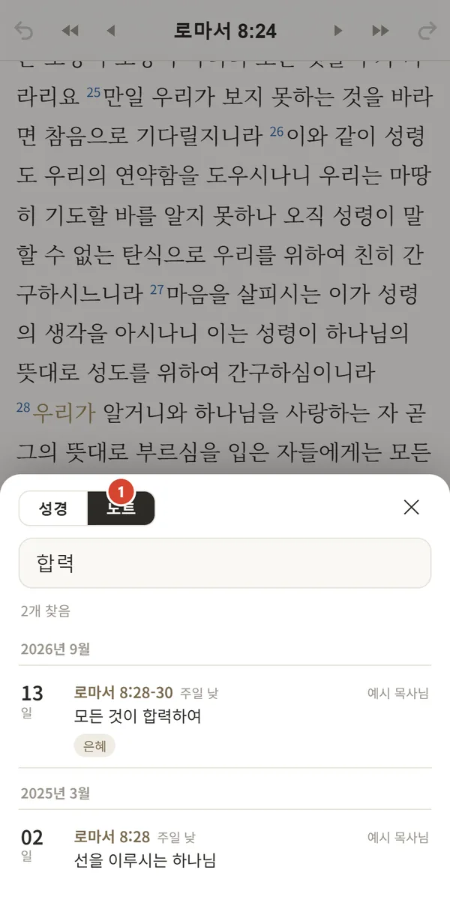
- 1노트 탭 — 제목·본문·설교자·태그에서 찾습니다. 비워 두면 모든 노트가 날짜순으로 나옵니다.
8. 관주 — 관련 구절
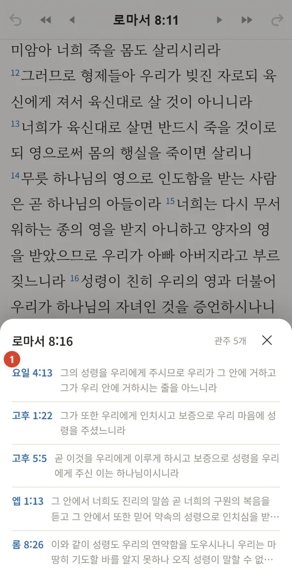
본문의 작은 절 번호를 누르면 그 절의 노트와 관련 구절이 열립니다.
- 1관련 구절이 연관이 깊은 순서로 나옵니다. 누르면 그 구절로 가고, 위쪽 막대의 이전 위치로 돌아옵니다.
관주는 OpenBible.info 교차참조(CC-BY)입니다. 종이 관주성경과는 목록이 다릅니다.
9. 보기 설정
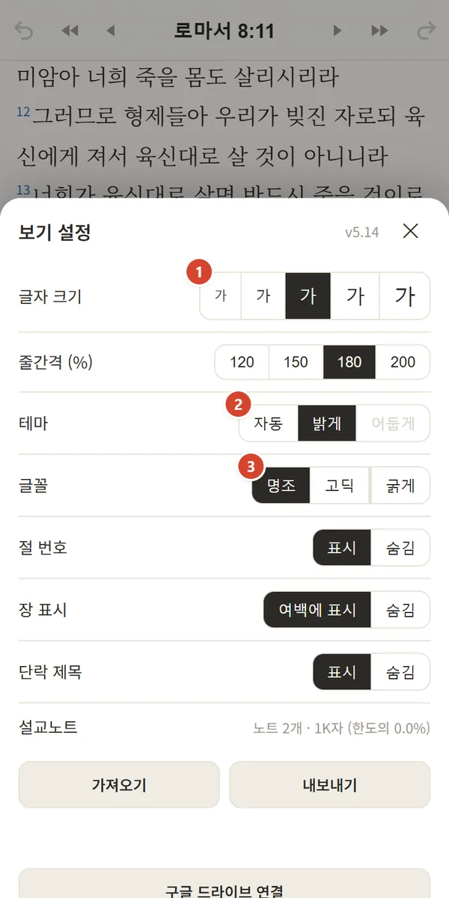
아래 막대의 Aa를 누릅니다.
- 1글자 크기 5단계, 그 아래 줄간격
- 2테마 — 자동(폰 설정 따라) / 밝게 / 어둡게
- 3글꼴 — 명조 / 고딕, 그리고 따로 켜는 굵게
그 아래에서 절 번호, 여백의 장 번호, 단락 제목(개역개정 소제목)을 보이거나 숨길 수 있습니다.
10. 폰·PC 노트 맞추기 (구글 드라이브)
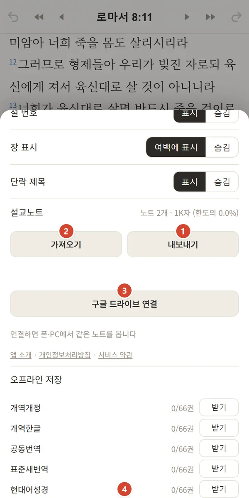
노트는 기본적으로 쓰는 기기 안에만 저장됩니다. 폰과 PC에서 같은 노트를 보려면:
- 3구글 드라이브 연결을 누르고 → 구글 계정을 고르고 → 드라이브 권한을 허용합니다.
다른 기기에서도 같은 구글 계정으로 연결하면 노트가 합쳐집니다.
- 드라이브에
biblenote-notes.json파일 하나가 생깁니다. 앱은 이 파일에만 접근합니다. - 연결 후 한 시간 동안은 노트를 쓰거나, 앱으로 돌아오거나, 앱을 내릴 때 저절로 맞춥니다.
- 한 시간이 지나면 단추가 동기화로 바뀝니다. 한 번 누르면 구글 창이 잠깐 떴다 닫히고 이어서 맞춥니다.
- 같은 노트를 두 기기에서 고쳤다면 나중에 고친 쪽이 남습니다. 한 기기에서 지운 노트는 다른 기기에서도 지워집니다.
- 해제를 눌러도 이 기기의 노트와 드라이브 파일은 그대로 남습니다.
노트는 앱 운영자에게 가지 않고 본인 드라이브에만 저장됩니다. 자세한 것은 개인정보처리방침.
11. 오프라인·백업
- 성경 미리 받기 — 설정 아래 오프라인 저장에서 번역본별 받기 또는 전체 받기(위 그림 4). 받아 둔 성경은 인터넷 없이 읽고 찾을 수 있습니다. 새 버전이 나와도 다시 받지 않습니다.
- 노트 내보내기(위 그림 1) — 모든 노트를 파일 하나로 저장합니다. 가끔 받아 두면 안전합니다.
- 가져오기(위 그림 2) — 내보낸 파일을 다른 기기에서 들여옵니다. 같은 노트는 겹치지 않고 나중에 고친 내용으로 합쳐집니다.
12. 자주 묻는 질문
노트가 없어졌어요.
노트는 브라우저 안에 저장되므로 브라우저의 사이트 데이터를 지우거나, 앱을 지우고 다시 설치하면 사라질 수 있습니다. 구글 드라이브를 연결해 두었다면 다시 연결하면 돌아옵니다. 연결하지 않았다면 내보내기 파일로 가져오기 하세요.
"구글 드라이브 연결"을 누르면 액세스가 차단됐다고 나와요.
앱 쪽 설정 문제일 수 있습니다. 화면을 캡처해 문의해 주세요.
[동기화] 단추를 자꾸 눌러야 해요.
구글 로그인은 서버 없는 앱에서 한 시간씩만 유지됩니다. 한 시간 안에는 저절로 맞추고, 그 뒤에는 한 번 눌러 이어 주세요. 노트 자체는 기기에 먼저 저장되므로, 누르지 않아도 노트를 잃지는 않습니다.
구절을 적었는데 색이 안 붙어요.
첫 줄에 설교 본문(예: 롬8:28)이 있는지 보세요. 절 번호만 적은 줄은 본문을 기준으로 채워지므로 본문이 없으면 알아보지 못합니다.
또 1. 처럼 숫자 뒤에 마침표가 바로 붙으면 목록 번호로 봅니다. 1절 또는 1 -> 처럼 적어 주세요.
업데이트가 안 된 것 같아요.
앱을 완전히 닫았다가 다시 여세요. 설정 Aa 오른쪽 위의 버전 번호로 확인할 수 있습니다.